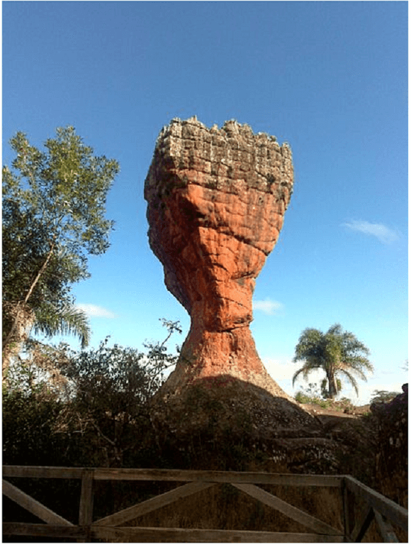
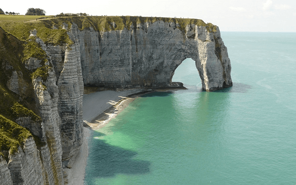
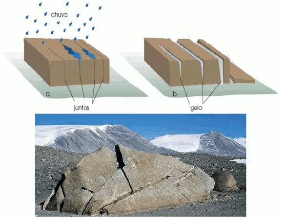
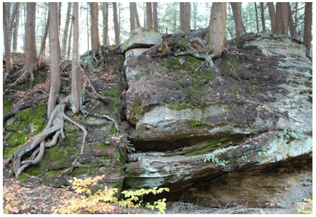
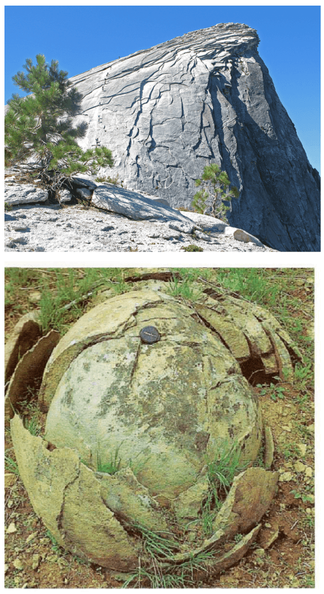

Objetivo: Entender o papel das forças externas na configuração das estruturas e formas do
relevo terrestre. Distinguir entre intemperismo físico e químico e seus fatores. Identificar os fatores do
intemperismo. Descrever os diferentes tipos de erosão.
Digite seu nome
Introdução
Na aula passada, conhecemos alguns processos relacionados a dinâmica
interna do relevo, como o tectonismo, vulcanismo e os terremotos.
Nesta lição, veremos os agentes externos que moldam a superfície terrestre (água, vento, geleiras etc.), ao
provocar alterações físicas e químicas nas rochas.
Ao final, você compreenderá como funciona o intemperismo, o processo de erosão, transporte e sedimentação e a
importância do conhecimento do relevo para a sociedade.
O que são os agentes externos do relevo?
Aprendemos que o relevo é basicamente o conjunto das diversas configurações da crosta terrestre. Entretanto,
essa superfície é a morada do homem, diferenciada por processos naturais e socais.
A importância do estudo do espaço terrestre no atual período é fundamental, uma vez que atingimos um
conhecimento total do Planeta, graças as novas tecnologias (Sensoriamento Remoto, Geoprocessamento) em um
período marcado pela ciência, técnica e informação.
O que o relevo tem a ver com tudo isso? O relevo é feito de rochas, assim como nossas calçadas, pontes,
moradias e estas se degradam ao longo do tempo.
Nós dependemos dos materiais disponíveis na superfície terrestre para diversas atividades humanas, como o
cultivo do solo, construção civil ou desenvolvimento da indústria.
Por meio da ação das águas, do vento, do mar, das geleiras, dos seres vivos etc., a paisagem terrestre é
modelada e alterada.
Esses são os agentes externos do relevo. Eles são responsáveis por deteriorar e desintegrar
os materiais da Terra, na superfície ou próxima a ela, através de sua quebra física e alteração química.
Trata-se do intemperismo, que age sobre a rocha desagregando-a para formar peças menores.
Alguns minerais são alterados ou dissolvidos dando origem a outras formações. Exemplo de intemperismo pode
ser visto na figura abaixo:

O Parque Estadual de Vila Velha é um sítio geológico
situado no município brasileiro de Ponta Grossa, do qual é a principal atração turística. Fonte: Wikipedia.
Esse exemplo mostra um tipo de rocha, o Arenito esculpido pela força do vento e das chuvas ao longo de
milhões de anos. Esse alicerce de rocha sedimentar sofreu intemperismo com a exposição e o desgaste por
milhares ou milhões de anos.
O transporte do material erodido das rochas é chamado de erosão e pode ser carregado para
outro local e finalmente depositado como sedimento. O chão onde pisamos pode ter sido, no
passado, montanha desgastada ou erodida dependendo do local no Planeta em que vivemos.
Veremos em detalhes cada um desses processos responsáveis por alterar a configuração do relevo terrestre.
Agora é com você!
Faça uma lista em seu caderno sobre o que já ouviu falar sobre esse assunto: intemperismo, erosão e seus
tipos.
O que gostaria de saber mais?
Teste sua observação!
O que aconteceu com esse automóvel enferrujado sob o ponto de vista dos agentes externos do relevo?
Esse tipo de relevo chamado de falésia sempre apresentou esse formato? Quais agentes contribuíram para tal
resultado?

Falésia, Normandia, França.
Fonte: https://pixabay.com/pt/photos/fal%c3%a9sias-etretat-normandia-fran%c3%a7a-111534/
Questione a realidade!
Como o intemperismo físico afeta a superfície da Terra?
Como os processos químicos dissolvem as rochas?
Qual o resultado do intemperismo?
Quem é o responsável por levar o material intemperizado de um local para o outro?
Como a ação do vento, água, gelo, e organismos vivos atuam na modificação das paisagens?
Intemperismo
É comum dizer que “nada resiste ao tempo”. Podemos acrescentar que nem mesmo as rochas, apesar de sua dureza
e resistência.
Não há material que não seja suscetível (capaz ou passível de receber) ao intemperismo, também chamado de
meteorização. A deterioração das rochas ou de qualquer coisa na Terra seria uma resposta
desses materiais às mudanças de ambiente nas quais estão inseridas.
Estruturas metálicas, carros, granito, monumentos, podem enferrujar-se, enfraquecer-se ou esfacelar-se quando
expostos à água ou gases da atmosfera, em um deserto, geleira ou região tropical.
Isso tudo é o intemperismo. Esse processo prepara a rocha para a erosão ao enfraquecê-la ou quebrá-la. Ele
pode ser, basicamente, de dois tipos: intemperismo físico ou químico. No primeiro ocorrem
mudanças físicas dos materiais da Terra, mas não mudam sua composição; Já no segundo caso, os minerais das
rochas são quimicamente dissolvidos.
Os intemperismos físico e químico atuam juntos, reforçando um ao outro. Enquanto o físico quebra o material
rochoso em pedaços menores, seu parceiro nesse processo, o químico, pode dissolvê-lo sem grandes problemas.
Fatores do intemperismo
Existem fatores que influenciam e controlam a forma de atuação do intemperismo.
O primeiro deles é o clima, representado pelas mudanças de temperaturas e na distribuição
das chuvas. Depois temos o relevo, que dependendo da sua inclinação afeta diretamente a
infiltração de água pluviais (chuvas). O tipo de fauna e flora também
interfere no grau de intemperismo, pois eles fornecem matéria orgânica para relações químicas. O tipo de
rocha matriz, devido a sua resistência aos processos intempéricos. E o
tempo de exposição das rochas aos agentes externos. (Fonte: Teixeira (2009, adaptado).
Intemperismo físico
O intemperismo físico ou mecânico fratura a rocha em pequenos pedaços sem promover alteração química de seus
minerais.
O granito, por exemplo, é uma rocha muito resistente, mas pode ser rompida pelas forças físicas como
congelamento, variação da temperatura em áreas desérticas, liberação de pressão ou por meio da atividade
orgânica, isto é, ligado a ação de seres vivos diretamente nas rochas.
A variação de temperatura, como um dos fatores do intemperismo, transforma as rochas na medida em que elas
são aquecidas e depois resfriadas.
Em áreas desérticas a diferença de temperaturas entre o dia e a noite é muito alta, podendo variar em até 30º
C ou até mais. (essa diferença é chamada de amplitude
térmica).
Essa alternância de calor gera uma tensão e causa uma fratura nas rochas, bem como a queima de florestas e o,
intenso calor provoca expansão e contração nas rochas.
Já nas áreas de desertos frios, como o continente Antártico, à água congela e descongela de forma repetida
nas juntas ou rachaduras das rochas.

Bloco de gnaisse fraturado pela ação do gelo nas
fissuras (Antártica). Fonte: Teixeira (2009, p. 142).
Na figura acima podemos observar o processo de aberturas de fissuras, pois a água ao congelar aumenta seu
volume (em cerca de 9%), se expande contra as paredes das rochas, causando as chamadas cunhas de gelo.
Outro fator do intemperismo está relacionado a atividades dos organismos vivos. O exemplo mais marcante diz
respeito a pressão exercida pelas raízes das plantas,
ao se infiltrarem nas rochas ocasionando fraturas. Também participam desse processo
animais, plantas e bactérias. Animais que vivem em tocas, répteis ou roedores, dentre outros, misturam o
solo e trazem material das profundezas para a superfície para sofrerem intemperismo. Já as bactérias, algas
e fungos penetram nas fraturas e produzem ácidos responsáveis pela dissolução dos minerais, o material de
que são feitas as rochas.

as raízes de plantas. Fonte:
https://www.geocaching.com/geocache
/GC1JMFF_biological-weathering.
Além de fissuras e fraturas causadas por expansão do gelo ou variação de calor, temos o intemperismo por
esfoliação. Trata-se de
um processo de descamação das rochas tal como uma grande cebola ou quando grandes blocos são destacados da
parede rochosa.

Placas esfoliadas de granito, em Half Dome no Parque
Nacional de Yosemite, EUA na figura acima. Nesta, uma alteração esferoidal tal como as camadas de um
repolho. Fonte: Wikipedia e Press (2006).
Resumindo: o intemperismo físico abre o caminho e facilita o intemperismo químico.
Teste seu conhecimento
Intemperismo químico
Geotecnologia
Cartografia
(1) Equipamentos para estudar o espaço terrestre
( ) Legenda
(2) Aquisição de imagens de satélite
( ) GPS
(3) posicionamento por satélites
( ) Sensoriamento remoto
(4) Representação x Real
( ) Escala
(5) Cores e símbolos
( ) SIG
Teste seu conhecimento
Assinale todas as alternativas que satisfazem as características da projeção de Mercator:
Não existe pergunta boba! A Ciência é feita de perguntas!
P:
R:
P:?
R:
P:
R:
Desafio em grupo: Exposição de ideias sobre a dinâmica do Planeta Terra.
Escolha um período ou um fato marcante apresentado nas Eras geológicas da Terra e
apresenta
três argumentos sobre a importância do conhecimento das dinâmicas do Planeta atualmente.
Instruções
Forme um grupo com três estudantes;
Selecione os fatos e discuta com seu grupo os argumentos da questão; (5 minutos);
Escreva sua resposta à questão solicitada.
Escolha um integrante do grupo para expor a questão a turma; (1 a 2 minutos).